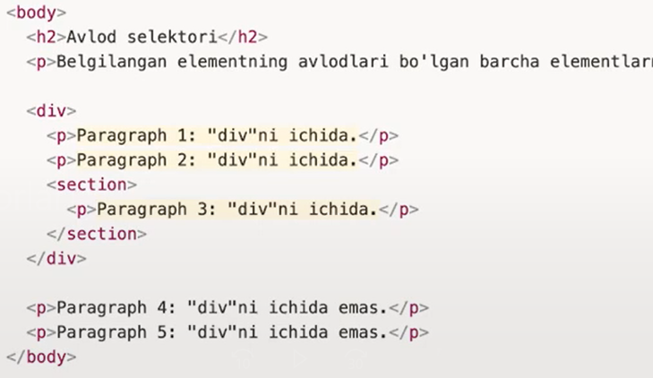
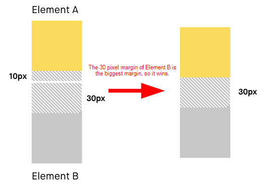

HTMLga kirish
! Html bu buyruqlar toplami bo`lib u yordamida biz kampuyuterga web buyruqlarini berishimiz mumkin!
Deklaratsiya
!DOCTYPE html- ushbu hujjat HTML5 hujjati ekanligini belgilaydi.Element
html lang="en"- bu htmlning ilidizi hisoblanib odatda uning tilini eng yani ingliz tili qilinadi.Element
head- bu htmlning boshi, u yerda unga kerak bo'ladigon linklar ulanadi, ismi qoyiladi.Element
meta charset="UTF-8"- bu kampuyuter va boshqa qurilmalar bilan piksellari togri kelishini taminlaydi.Element
meta name="viewport" content="width=device-width, initial-scale=1.0"- Bu element ham qurilmalarda birga bir korinishini taminlaydi.Element
title- Bu html faylning ismi bolib, u yerga nima web sayt haqida ekanligi yoziladi.Element
body- Bu htmlning tanasi bolib asosan shu joyda loyiha yaratiladi.Element
h1- Bu sarlavha bolib, mavzularni katta kichik qilib beradi.Element
a- Bu sahifadan sahifaga otish uchun ishlatilinadi.
Semantic Elements
! Bu asosan kozi ojizlar va har xil kod tekshiruvchi botlar uchun yozilgan content qanday malumotga asoslangan ekanligi haqida aytib turadi.
header
aside
article
details
Figcaption
figure
footer
main
mark
section

Comments
! Komentariya asosan html elementlardan oldin qoyilib nima uchunligi qisqacha aytib otiladi
Attributelarga kirish!
! Attributelar elementga osonlik beradi va ular yordamida boshqa sahifaga otish classlar berish va h.k lar qilish mumkin!
Bular:
- lang- bu asosan htmlda ishlatiladi va htmlning qaysi tilida yozilayotgani haqida malumot beradi.
- class- bu asosan elementlarni guruhlash uchun kerak
- href- o'tishi kerak bolgan sahifaga yo'l korsatish
- id- bu html faylda bir martta ishlatiladigon elementlar uchun guruhlash
- src- bu rasm yoki boshqa fayllar uchun yol korsatish
- alt- bu agar src ga berilgan yolda file topilmasa yoki yo'l xato berilsa uning orniga chiqadigon soz uchun
- style- bu elementlarga inline style berish
- type- bu elementning qanday turga mos ekanligiga javob beradi.
Next page
! Agar biz a elementiga target="_blank" berib qo'ysak bosilganda boshqa sahifada ochiladi.
Heading kirish!
! Headinglar textlar, maqolalar, she'rlar va boshqa yozuvli matnlarga Sarlavha hisoblanadi.
Headingni 6 ta turi mavjud:
- h1- Heading 1, default font-size 32px (2em) font-weight: bolder
- h2- Heading 2, default font-size 24px (1.5em) font-weight: bolder
- h3- Heading 3, default font-size 18.72px (1.17em) font-weight: bolder
- h4- Heading 4, default font-size 16px (1em) font-weight: bolder
- h5- Heading 5, default font-size 13.28px (0.83em) font-weight: bolder
- h6- Heading 6, default font-size 10.72px (0.67em) font-weight: bolder
Paragraph kirish!
! Gazeta, kitob v.k larda albatta qisqacha yoki bir dunyo textlar yozilgan boladi bular paragriflar deyiladi.
Paragrifning bittagina korinishi bor
- p- koproq textlar uchun ishlatilinadi!
Stylega kirish!
! Style (stillar) asosan elemntga still berish uchun ishlatilinadi.
Stylening 3ta turi mavjud:
- Inline- Elementning style atributida beriladigon stillar
- Internal- htmlning head qismidagi style bolib u yerda ham stillar yozsak boladi
- External- Eng yaxshi va eng kop ishlatilinadigon stil turi htmlning head qismida link orqali ulanib boshqa style faylga yozilgan stillar
Inputga kirish!
! Inputlar foydalanuvchidan malumot olish yoki dinamik tarzda boshqarish va bir qancha hususiyatlarga ega elementdir
Inputlarning 14ta tipi mavjud:
- type="text"- Bu matn, ism sharif, turarjoy yoki boshqa turli xil matnlar uchun
- type="email"- Emailga asoslangan input turi, unda asosan foydalanuvchi royxatdan otayotganda emaili tekshirilishi uchun ishlatiladi
- type="password"- Parollar va maxfiy sozlar uchun mojallangan input turi
- type="radio"- Bir nechta kannallardan bittasiga ulanish uchun ishlatilinadi
- type="color"- Ranglar bilan ishlash uchun mojallangan input turi
- type="range"- Biron funksiyani qiymatini tanlashda ishlatilinadi asosan video yoki musiqalarni davomiyligi yoki ovozini baland pasligi uchun ishlatilinadi
- type="checkbox"- Bu bajarish yani biron ish bajarilganda bajardim tugmasini bosadi bu huddi shunday tugma
- type="file"- Foydalanuvchi tomonidan kiritiladigon faylar uchun mojallangan input turi
- type="number"- Faqat sonlarni qabul qiluvchi input turi
- type="tel"- Telefon nomerlar uchun mojallangan input turi
- type="search"- Malumotlar iz;ash uchun mojallangan input turi
- type="time"- Soat uchun mojallangan input turi
- type="hidden"- korinmas input turi
- type="button"- Jonatish tugmasiga mojalangan input turi
! Inputning eng krakli atributilari:
- required- Agar malumot kiritilmagan bolsa, kiritishni talab qiladi.
- readonly- Inputga hech qanday malumot kirita olmaydi, faqat malumotni korish uchun ishlatilionadi.
Yanabir inputga oxshash elemnet bu textarea!
! U (textarea) yordamida choziluvchan input hosil qilishimiz mumkin
- textarea- Bu Foydalanuvchi tomonidan ham boshqariladigon input turi desa ham boladi.
Buttonga kirish!
! Buttonlar inputga kiritilgan malumotlarni jonatish chun ishlatilinadi
- button- Bu malumotlarni jonatish uchun ishlatilinadi.
Html Elemntlarni formatlash!
! Formatlash elementlari matnning maxsus turlarini ko'rsatish uchun mo'ljallangan:
- b- Qalin matn
- strong- Muhum matn
- i- Kursiv matn
- em- Takidlangan matn
- mark- Belgilangan matn
- small- Kichikroq matn
- del- O'chirilgan matn
- ins- Kiritilgan matn
- sub- Subscript matn (indeks)
- sup- Yuqori yozuv matn (daraja)
Formaga kirish!
! Formalar asosan royxatda otayotganda, post joylayotganda va bir qancha foydalanuvchilarni malumotlarini olishda foydalaniladi.
Forma elementlariga asosan quyidagilar kiradi:
- input- Malumot olish uchun
- button- Malumot jonatish uchun
Agar biz inputlarga required atributini berib qoysak bo'sh inputlarda xatolik korasatadi va foydalanuvchidan inputlarni to'ldirishini talab qiladi.
Tables (jadvallar) ga kirish!
! Jadvallar odatda koplab malumotlarni birin ketinlik bilan chiqarishda ishlatilinadi. Ular yordamida foydalanuvchilar, tovarlar, eskizlar va h.klarni royxatini chiqarishimiz mumkin.
Table ning asosiy elementlari:
- table- bu jadval yaratib beradi.
- thead- Bu jadvalning boshi.
- tr- Bu jadval ichidagi elementlarni yaratib beradi.
- th- Bu jadvalning boshida ozgarmas turadigon jadval nomlari.
- tbody- Bu jadvalning tanasi, u yerda malumotlar ketma-ketlik bilan chiqib keladi.
- td- Bu jadvalning tanasida chiqib keladigon malumotlar.
! Agar biz tablening atributida border="1"; berib qoysak jadval aniq va tiniq korinadi.
! Agar biz tablening stiliga border-collapse: collapse; berib qoysak biz hohlagandek joylashadi.
Lists (ro'yxatlar) ga kirish!
! Ro'yxatlar asosan malumotlarni tartiblash yoki tekislash uchun ishlatilinadi. Lists odatda ikki turga bolinadi: Tartibli va tartibsiz.
Tartibli listsning asosiy elementlari:
- ol- Bu tartibli list yaratib beruvchi element.
- li- Bu listning ichidagi element.
Tartibli listlarda har bir elementning oldiga sonlar bilan yoziladi.
Tartibsiz listsning asosiy elementlari:
- ul- Bu tartibsiz list yaratib beruvchi element.
- li- Bu listning ichidagi element.
Tartibsiz listlarda har bir elementning oldiga dumaloq bilan yoziladi.
Iframega kirish!
! Iframelar sayt ichida boshqa sayt qurilishidir, yani o'z saytingiz ichida boshqa saytni ham qoyib qoyishingiz mumkin.
Iframelar odatda saytga xarita, youtube video va filial saytlar bolsa shuni qoyishda ishlatilinadi.
- iframe- Iframe yaratuvchi element.
Selects (tanlshlar)ga kirish!
! Selects odatda foydalanuvchiga bir nechta takliflar berish va foydalanuvchi birini tanlsb olishi uchun ishlatilinadi.
Selects elementlari:
- select- bu tanlsh uchun dropdawn yaratib beradi.
- option- Bu tanlanuvchi element yaratib beradi.
! Agar biz biron option ga selected atributini bersak shu option avtomatiski tanlangan boladi.
! Agar hech qaysi optionga selected artibuti berilmagan bo'lsa, u holda avtomatiskiy birinchi option ni tanlab oladi.
Cssga kirish!
! Cssning kengaytmasi Cascading Style Sheets bunig manosi Kaskadlangan Stillar jadvali.
! Css ning versiyalari:
- Css-1- 1996-yil, dekabr oyi o'rtalarida ishlab chiqilgan.
- Css-2- 1998-yil, may oyida ishlab chiqilgan. 2-versiya 1-versiya ustida qurilgan bo'lib bazibir imkoniyatlar qoshilgan.
- Css-3- 1999-yil, iyun oyida ishlab chiqilgan. 3-versiyada koplab funksiyalar qoshilgan holda ishlab chiqilgan va shundan beri css 3 dan foydalanib keliniladi.
Cssni html hujjatga ulash!
! Buning uchun html hujjatga otamiz va head qismida link orqali css faylga yo'l ko'rsatamiz va css fayl ulanadi.
Css turlari!
! Html darsida aytib otilgandek css turlari uch turga bo'linadi:
- Inline- Elementning style atributida beriladigon stillar
- Internal- htmlning head qismidagi style bolib u yerda ham stillar yozsak boladi
- External- Eng yaxshi va eng kop ishlatilinadigon stil turi htmlning head qismida link orqali ulanib boshqa style faylga yozilgan stillar
Inline turi!
Inline turida stil berish uchun elementga style attribute beriladi va qoshtirnoq ichida bir qatorlik css kod yoziladi.
Internal turi!
Internal turida stil berish uchun head elementi ichida style elementi ochiladi va shu joyda css kod yoziladi.
External turi!
External turida stil berish uchun head elementi ichida link ochilib, src da css faylga yo'l korsatiladi va css faylda kod yoziladi.
Comments (komentariyalar)!
! Htmlda bo'lganidek css da ham kamentariyalar bor, bular asosan yozilayotgan still qaysi joy uchun ekanligini bildiradi va best proctics da ham ijobiy qaraladi.
Css syntax!
! Boshida qisqa css kod yozib ko'raylik.
- body {color: black;}
- body- Bu Selector yani tanlab oluvchi
- color- Bu css xossa
- black- Bu css qiymat
! Shundan bilsak bo'ladiki css xossa va qiymatlarda iborat stillar toplami.
Selectors (Tanlab oluvchilar)!
Selector turlari:
- tagName- Bu htmlda yozilgan elementlar bolib ular (div, span, h1, p, section va h.k) teg nomi yordamida olinadi. (div)
- class- Bu htmlda yozilgan class bolib u (.) nuqta yordamida olinadi. (.class)
- id- Bu htmlda yozilgan id bolib u (#) reshotka yordamida olinadi. (#id)
- attribute- Bu htmlda yozilgan attribute bolib u ([]) tortburchak qavs yordamida olinadi. ([input="text"])
- universal- Bu htmlning hamma elementiga tenglanadigan selector bolib u (*) yulduzcha yordamida olinadi. (*)
Colors (ranglar)ga kirish!
! Biz color yordamida elementga har xil rang va gradientlar berishimiz mumkin.
! Css da default nomiligicha qolgan ranglar ham anchagina.
Bularga misol qilib:
- white- oq rang.
- red- qizil rang.
- black- qora rang.
- pink- pushti rang.
- purple- siyoh rang.
- yellow- sariq rang.
- oranged- apelsin rang.
- green- yashil rang.
- grey- kul rang.
! Bundan tashqari rgb yani red green blue uchta rang birlashishidan hosil boladigan bir qancha turlari bor. Siz bu yordamida hohlagan rang hosil qilishingiz mumkin.
rgb bu raqamlardan tashkil topgan ranglardir, qisqa kod:
- body {background-color: rgb(0, 0, 0);}
! Ranglar bilan ishlashni osonlashtirish uchun color Pick plaginini ornatish tavsiya etiladi.
Specificity (o'ziga hoslik)ga kirish!
Cascading (kaskadlanish)!
! Kaskadlanish deb - bitta elementga bir nechta css qoidalari ko'rsatilgan bo'lsa shulardan bittasini tasir qilishi.
! Kaskadlanish jarayonida qaysi usul ustunvor bo'lsa shu usulni bir xil stillar tasir qiladi qolganlarniki esa tasir qilmaydi.
Ustunvorlik darajasini korib chiqadigon bolsak:
- inlini style- Eng birinchi o'rinda inline yozilgan stillar ustunvor bo'ladi.
- id- id esa inline stildan keyingi birinchi orinda turadigon ustunvor usuldir.
- class- class esa id dan keyingi ustunvor usul.
- attribute- class dan keyingi usul bu attributedir.
- tag- eng oxirgisi bu tag yordamida berilgan stil usulidir.
! Css devor qoidasi bilan ishlaydi yani devorga suv sepsangiz tepadan pastga qarab oqib tushdadi, misol uchun bitta elementga ikkita class yordamida color berildi bu holda css eng oxirgi (pastda) yozilgan kodni ishlatadi.
Inheritance (Meros olish)ga kirish!
! Meros olish bu ota (parent) elementning stillariga ega bolishdir
Misol uchun bir elementning ichidagi har bir elementiga bir xossa va qiymat beriladigon bo'lsak, u holda bir martta parent elemnetga stil yozish kifoya qiladi. Ota (parent) elementdagi kod farzandlariga tasir qiladi.
Cambinators (Kambinatorlar)ga kirish!
! Bilamizki insonlarda avlodlari farzand nevara chevara va h.k bo`lib ketadi, html hujjatda ham huddi shunday body header nav section va h.k bolib ketadi.
Misol uchun quyidagi rasmga etib qaratsak:
-

Yuqoridagi rasmda body ga farzand h2, p teglari bor undan so'ng div farzandi bor shu div farzandini ichidagi p teglar body uchun navaradir va div uchun farzandir. Undan keyin divning ichidagi section tegi div uchun farzand body uchun navaradir va sectioning ichidagi p tegi section uchun farzand div uchun navaradir body uchun esa evaradir
! Cssda kambinatorlar muhum ahamiyatga ega chunki css kod shu asosida yoziladi. Agar biz divning ichidagi sectionni olmoqchi bolsak quydagicha kod yoziladi:
- body div section{color: black;}
! Albatta bu qisqa korinishi real loyihalarda classlar berilib ishlanadi.
Classes (klaslar)ga kirish!
! Biz classlar bilan ozgina tanishib oldik endi uni yana bir imkoniyati bilan tanishib o'tsak.
Biz prokeyt kotarayotganimizda bir xil stilli elementlar bo'lishi mumkin, ularning har biriga still yozishdan ko'ra bitta class ochib hammasiga tegishli bola oladigon stillar yozish best procticsda yaxshi deb topilgan va o'zimiz uchun ham qulaydir.
- .color-red {color: red;}
.font-size-16 {font-size: 16px;}
Yuqoridagi kodga etibor bering, unda tushunarli tarzda class nomi berilgan va uni html hujjatda bir necha martta ishlatsak bo'ladi. Ya'ni har hil elementlarini ichidagi yozuvini rangini qizil qilish kerak har bir elementga still yozmasdan class qo'yib ketsak ham bo'ladi.
! Htmlda class olishda bir necha martta class attribute yozish mumkin emas, bir martta class attribute yozilib beriladigon classlar orasidan joy tashlanib qoshilib ketaveradi.
- class="color-red font-size-16" {color: red;}
Class va ID, !Important ga kirish !
Classlar
! Classlar odatda bir necha martta foydanaliladigon elementlar uchun ishlatilinadi. Misol uchun bir nechta text elementlar bor ularga bir xil still beriladigon bo'lsa bitta class yozilib uni boshqa elementlarda ham ishlatish tavsiya etiladi.
- .text-center {text-align: center;}
IDlar
! Idlar odatda faqat bir martta ishlatilinadigon elementlar uchundir. Biz html idni bir martta yozgan bo'lsak qaytib shu nom bilan yoa olmaymiz. Odatda idlar close Buttonlar uchun, cart savatchalar uchun ishlatilinadi.
- #close-btn {z-index: 100;}
!Impotantlar
! Importantlar odatda muhum elementlarda ishlatilinadi. Agar bir elementda oldin still berilgan bo'lsa va siz boshqa still yozayotgan bo'lsangiz sizni stillingizni olmasa Important orqali oldirishingiz mumkun. Asosan bir elementga classda still berayotganingizda shu elementning idsi bo'lsa va iddagi stillarni olsa Important orqali ham oldirishingiz mumkun.
- .card {background-color: #fff !impotant;}
! Bundan tashqari important kalit so'zini hohlagan hossa uchun qo'llashingiz mumkun.
Box Model (Quti modeli)ga kirish!

! Box modeli quyidagilarda iborat:
- Top, Right, Bottom, Left- Birinchisi float qiymatlari hisoblanadi va ular soat strelkasi bo'ylab qoyiladi.
- Margin- Ikkinchisi bu margin ya'ni tashqaridan joylashishi.
- Border- Uchunchisi bu border ya'ni huddi rasmning ramkasiga oxshash rasmdagi tashqi chiziq.
- Padding- To'rinchisi bu padding ya'ni ichkariga itarishi.
- Content- Beshinchisi bu content ya'ni huddi rasm deb qarasak ham bo'ladi va uning width (kenglik), height (balandlik) xossasiga ega bo'ladi.
Margin collapsing ga kirish!
! Margin collapsing bu ikkita tepa va pastda joylashgan qutining marginlarini olib ulardan kattasinikini natijaviy qilib qaytaradi. Misol uchun tepadagi qutiga bottom da 10 px va pastgagidan top dan 30 px deb yozsak ikkalasini birlashtirib natijaviysini qo'yadi ya'ni 30ni:
-

! Bunday holda natijaviysini olgandan keyin ikkinchi elementning berilgan qiymati yoqilib qoladi:

Shorthands (Qisqartmalar)ga kirish!
! Qisqartmalar juda ko'p ishlatilinadi va ular qulaydir misol uchun kengaytmasidagi holatni ko'rsak:
-
.box {margin-top: 10px;margin-right: 10px;margin-bottom: 10px;margin-left: 10px;}
! Ko'rib turganingizdek har bir tomoniga bir xil qiymat berilayapti va har biriga alohida yozilayapti, bu kod kattalashishiga olib keladi va saytni ishlashini sekinlashtiradi. Shunday muammoni yo'q qilish uchun qisqartmalar o'ylab topilgan. Misol uchun shuni qisqartirib yozsak:
-
.box {margin: 10px;}
! Bu kod qisqa va tushunarli hisoblanadi va manosi jihatdan yuqoridagi bilan bir xil.
! Agar biz har bir tomoniga alohida bermoqchi bo'lsak u holda qoyidagicha yo'l tutamiz:
-
.box {margin: 10px 15px 20px 5px;}
- birinchi 10px- bu topga berilgan qiymat hisoblanadi.
- ikkinchi 15px- bu rightga berilgan qiymat hisoblanadi.
- uchinchi 20px- bu bottomga berilgan qiymat hisoblanadi.
- to'rtinchi 5px- bu leftga berilgan qiymat hisoblanadi.
Shu tariqa soat strelkasi bo'ylab berib kelinadi!
! Bundan tashqari top va bottomga bir xil o'lchov right va left ga bir xil o'lchov qo'ymoqchi bolsak quyidagi usuldan foydalanamiz:
-
.box {margin: 5px 10px;}
- birinchi 5px- bu top va bottomga berilganqiymat.
- ikkinchi 10px- bu right va leftga berilganqiymat.
! Huddi shu holatda buni paddingga ham qo'llasak bo'ladi:
-
.box {padding-top: 10px;padding-right: 10px;padding-bottom: 10px;padding-left: 10px;}
.box {padding: 10px 15px 20px 5px;}
.box {padding: 5px 10px;}
! Endi border uchun ko'radigon bo'lsak, uning yoyilmasi:
-
.box {border-width: 5px;border-style: solid;border-color: red;}
- border-width- bu borderning kengligi.
- border-style- bu borderning stili.
- border-color- bu borderning rangi.
! Keling endi uni qisqartmasini ko'radigon bo'lsak:
-
.box {border: 5px solid red;}
bu qisqa va yaxshi ko'd hisoblanadi.
! Border-stylening turlari:
- dotted- Nuqtali chegarani belgilaydi.
- dashed- Chiziqli chegarani belgilaydi.
- solid- Qattiq chegarani belgilaydi.
- double- Ikki chegarani belgilaydi.
- groove- 3D yivli chegarani belgilaydi. Effekt chegara rangi qiymatiga bog'liq.
- ridge- 3D chiziqli chegarani belgilaydi. Effekt chegara rangi qiymatiga bog'liq.
- inset- 3D ichki chegarani belgilaydi. Effekt chegara rangi qiymatiga bog'liq.
- outset- 3D boshlang'ich chegarasini belgilaydi. Effekt chegara rangi qiymatiga bog'liq.
- none- Chegarani belgilamaydi.
- hidden- Yashirin chegarani belgilaydi.
- mix- Bu turda biz o'zimiz hohlaganday qilib border belgilashimiz mumkun.
! Border-stylening ishlashi:
-
.box {border: 3px dotted grey;}
dotted stilli border!
.box {border: 3px dashed grey;}
dashed stilli border!
.box {border: 3px solid grey;}
solid stilli border!
.box {border: 3px double grey;}
double stilli border!
.box {border: 3px groove grey;}
groove stilli border!
.box {border: 3px ridge grey;}
ridge stilli border!
.box {border: 3px inset grey;}
inset stilli border!
.box {border: 3px outset grey;}
outset stilli border!
.box {border: 3px none grey;}
none stilli border!
.box {border: 3px hidden grey;}
hidden stilli border!